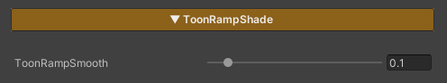

ToonRampShade
ToonRampSmooth : 1
ToonRampSmooth : 0

- Used to control the sharpness of light and shadow edges in a toon style
- Lower values produce sharper, harder lighting edges
- Higher values result in smoother, more gradual light transitions
last_modified_at: %Y->-